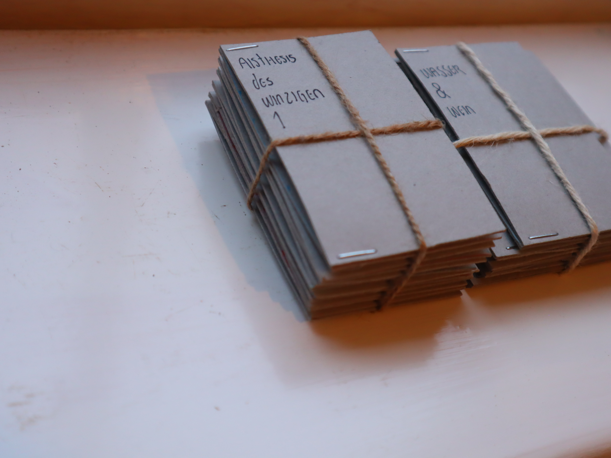

this semester i was working on a tiny books project [1].
in the fall of 2023 i visited my friend ángeles. she showed me a miniature book. she found it in the hallway to her apartment. i liked the little book. later i read more about miniature books. i read about the butcher's bible, about pouch books & about an amulet coran. i read all the hyperlinks on wikipedia.
a year later i moved to rotterdam. a move is a loss of resources. i no longer had a studio. my working materials - cardboard, cables, soldering irons, instruments, paper drills, microphones, cable ties, scissors, speakers, sheets of paper, books, thread, batteries - were not with me. my desire to print tiny books was growing in these circumstances.
the process of making the books was slow as it overlapped with moving, the beginning of the masters, classes and new collaborations.
aisthesis des winzigen 1 ; aisthesis des winzigen 2 ; aisthesis des winzigen 3 ; aisthesis des winzigen 4 ; aisthesis des winzigen 5 ; aisthesis des winzigen 6 ; ahnen ; das fenster ; das feuerwerk ; gemeinsam spielen ; wasser und wein
[1] this project is at the same time my master thesis for my previous studies.